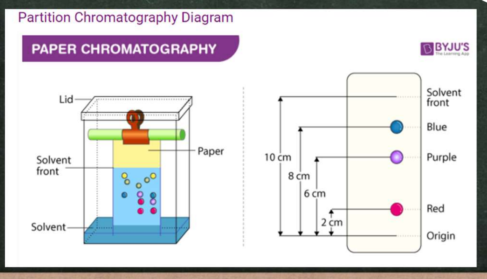

Đọc kết quả tách và định danh đại phân tử
Phân tử 1 · Đại phân tử · 4 trắc nghiệm và 1 tự luận
Bắt đầu học ↓Học trọn chương và làm bộ 80 trắc nghiệm, 15 tự luận
Sau buổi này
- Nối sắc ký và điện di với đặc tính dùng để tách.
- Phân biệt lượng nhận diện, độ tinh sạch và hoạt tính.
Gợi nhớ
Nêu một đặc điểm của phân tử mà sắc ký trao đổi ion dùng để tách. Một băng blot đặc hiệu trả lời câu hỏi gì?
Học kiến thức qua hình
Quan sát hình minh họa

Bảng hình ‘Partition chromatography diagram’ trong slide phác các vết sau di chuyển. Màu chỉ dùng để theo dõi vết trong sơ đồ. Sơ đồ giữ ghi công BYJU’S như trên slide.
Quan sát · Dò vạch xuất phát và theo các vết màu ở cột bên phải sau khi dung môi đi qua.
Dự đoán · Nếu hai chất bắt đầu ở cùng vạch nhưng một vết đi xa hơn, điều gì khác nhau giữa chúng trong phép tách?
Mở giải thích sau khi dự đoán
Quãng đường khác nhau phản ánh tương tác khác nhau với hai pha trong điều kiện này. Vị trí vết chỉ cho dữ kiện di chuyển, còn nhận diện chất hoặc hoạt tính cần phép đo phù hợp.
| Phân đoạn | Băng tổng | Băng kháng thể E | Hoạt tính tương đối |
|---|---|---|---|
| A | 5 | Có | 75 |
| B | 1 băng thấy rõ | Có | 15 |
| C | 2 | Không thấy | 2 |
Dữ liệu mô phỏng cùng lượng mẫu nạp để luyện cách đọc. Mô hình đặc tính tách dựa trên Mol-Chap1.pdf tr. 6, 9.
Đọc hình để tự rút ra cơ chế
Quan sát · So A với B, đâu có ít băng nhìn thấy hơn?
Dự đoán · Nếu mục tiêu là giữ hoạt tính E, có chọn B chỉ vì ít băng?
Mở giải thích sau khi dự đoán
B cho hồ sơ nhìn sạch hơn trong giới hạn phát hiện. A cho hoạt tính cao hơn, cần chuẩn hóa lượng E để so hoạt tính riêng.
Tách theo tính chất
Sắc ký tách theo chênh lệch tương tác giữa pha động và pha tĩnh. Trao đổi ion nhạy với điện tích ở pH đã cho. Sắc ký lọc gel tách theo khả năng đi vào lỗ xốp; phân tử có kích thước thủy động lớn thường ra trước trong vùng phân tách.
Làm rõ phép đo
SDS-PAGE thường tách polypeptide chủ yếu theo kích thước biểu kiến. Western blot nhận diện đích bằng kháng thể. Một tín hiệu đích rõ có thể cùng tồn tại với nhiều tạp chất hoặc hoạt tính thấp.
Liên hệ thực tế
Một quy trình phân tích phân đoạn thường cần phép tách, phép nhận diện và phép đo hiệu quả phân tử để quyết định phân đoạn nên giữ.
Cụm bài tập
Chọn phân đoạn cho việc nghiên cứu enzyme E
Dùng bảng A–C ngay bên dưới. Đơn vị hoạt tính quy chuẩn trong cùng điều kiện. Số băng tổng là số băng quan sát được. Hoạt tính trong bảng là phép đo chức năng đặc hiệu cho enzyme E ở từng phân đoạn.
| Phân đoạn | Băng tổng | Băng kháng thể E | Hoạt tính đặc hiệu cho E (tương đối) |
|---|---|---|---|
| A | 5 | Có | 75 |
| B | 1 băng thấy rõ | Có | 15 |
| C | 2 | Không thấy | 2 |
Đối chiếu bài làm
Chọn một chỗ còn phân vân. Giải thích lại bằng lời của mình rồi thử một câu cùng dạng.